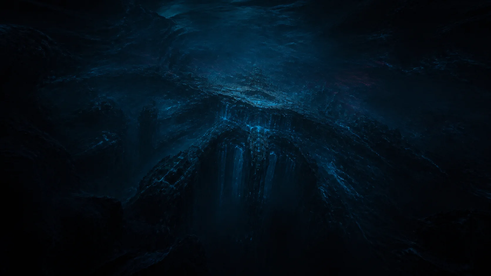
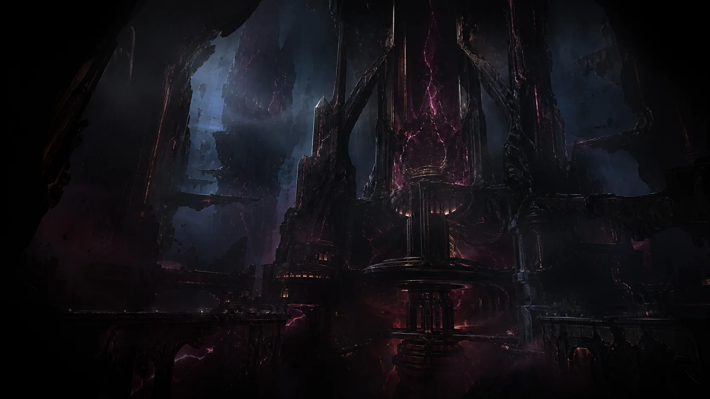

SUBMERGED SIGNAL / ARCHIVE INCOMPLETE“Beneath a surface without a horizon, something ancient continues to wait.”
The dimensional record remains incomplete. Discover this world to recover the transmission.
WORLD NOT YET DISCOVERED04 / THE GAME
The first vertical slice focuses on the Living Forest: exploration, responsive combat, rune-based abilities, dialogue, enemy encounters and a multi-phase boss.
The game is currently in active prototype development. Echoes is being built around a progression system in which each fractured world changes how Mark moves, fights and survives.
“I have already started. Now I need help taking the next step.
— Angel Corya
RUNE CODEX / INTERACTIVE SYSTEM PREVIEW
Select a rune to reveal its current lore and gameplay identity. These abilities are development concepts and may evolve during balancing.
ARCHIVE OF FRACTURES / INTERACTIVE CARTOGRAPHY
This is not a map of distance. It traces resonance, interruption and corruption between the Origin and nine fractured dimensions. Select a signal to inspect the surviving record.
RECOVERED VISUAL RECORDS
Two transmissions retained enough visual matter to reconstruct a partial record. Their coordinates and designations remain sealed.

SUBMERGED SIGNAL / ARCHIVE INCOMPLETE“Beneath a surface without a horizon, something ancient continues to wait.”
The dimensional record remains incomplete. Discover this world to recover the transmission.
WORLD NOT YET DISCOVERED
FORGE SIGNAL / ACCESS RESTRICTED“The fire remains lit, although no one remembers who feeds it.”
Access remains restricted. Discover this world to authorize recovery of the archive.
RECOVERY AUTHORIZATION REQUIRED